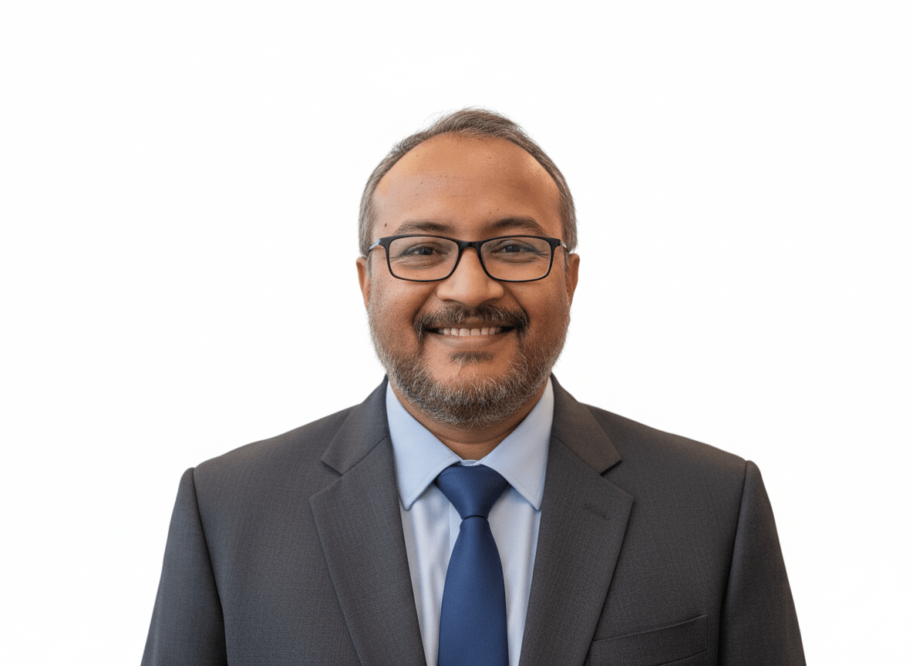

Group Leader

Suman Dutta
Researcher | Intelligent Living & Artificial Systems
About Me
I am a Creative researcher in the field of Intelligent Complex Systems, with a specialization in out-of-equilibrium Complex Fluids. I investigate model dynamics of Natural and Artificial Systems, combining Statistical Physics, High Performance Computing and Machine Intelligence, with an aim to develop strategies for Generative Physical Systems.
🎓 Professional Journey
Present Affiliation
Faculty Member, Department of Artificial Intelligence
School of AI, Amrita Vishwa Vidyapeetham, Coimbatore HQ
Joint Coordinator (Academic), B.Tech Programme (AI-Quantum Technology) (Since 03/2025)
Professional Research Experience
- Post Doctoral Fellow (01/2024 – 09/2024) - Simons Centre for the Study of Living Machines, NCBS (Advisor: M. Rao)
- Post Doctoral Fellow (01/2021 – 12/2023) - ICTS-TIFR (Advisor: C. Dasgupta)
- Post Doctoral Fellow (02/2018 – 12/2020) - The Institute of Mathematical Sciences, Chennai (Advisor: P. Chaudhuri)
Education
- Ph.D in Physics (08/2012 – 01/2018) - S. N. Bose National Centre for Basic Sciences
- M.Sc in Physical Sciences (08/2010 – 07/2012)